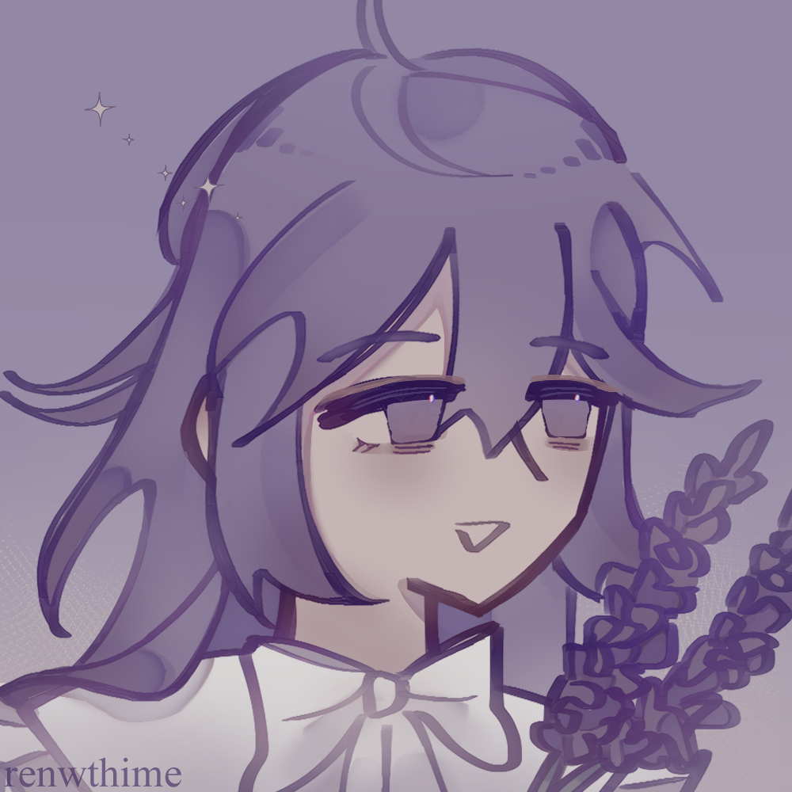
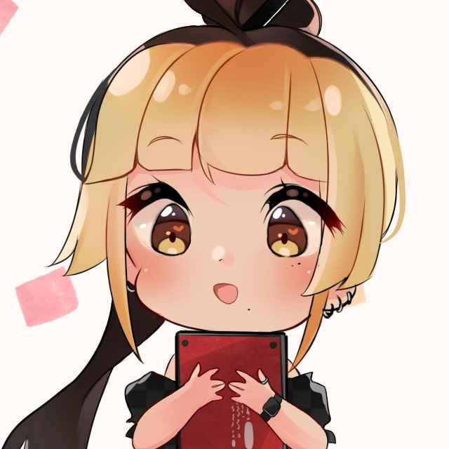
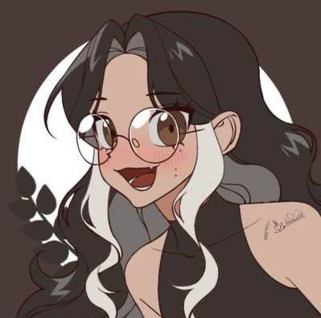

Nan Yelo
Diretora chefe
Escritora de "The Reason" e apaixonada pelo amor do casal "Guapoduo", sou obcecada por histórias e ter mil projetos ao mesmo tempo, então nada mais justo que providenciar um cantinho aconchegante para nossa comunidade se alojar e se sentir confortável.

Kiri
Programador chefe
Escritor desde 2016 e apaixonado por "Guapoduo" desde o primeiro momento. Eu amo me envolver em projetos para fandoms e sinto muito prazer em ver pessoas tão igualmente apaixonadas envolvidas neles, fandoms são lugares que pessoas podem se sentir confortáveis com o que gostam tanto e nada mais justo do que terem um lugar exclusivo para isso.

Ren
Moderadora
Artista movida à "Guapoduo", com muitas ideias e pouca execução.

Faburao
Moderadora
Escritora, leitora e amante de história.

Aloy
Artista
Descrição: Artista Digital; designer gráfico e fanfiqueira nas horas vagas.

Liazinea
Programadora
"Guapoduo" e "Ordem Paranormal" são minha vida

Chini
Moderadora
Toma cappuccino, surta por "Guapoduo", escreve, lê fanfic, dá opinião e faz planilha.

Little Wraith Chaos
Moderador
Reencarnação de um rei fantasma que escreve, desenha, compõe, só usa vermelho e preto e dá opinião na internet.